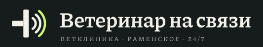
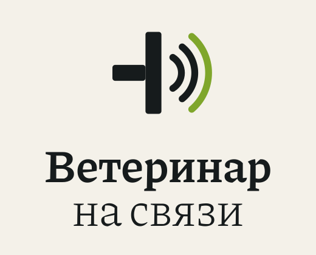

<!doctype html><html lang="ru"><meta charset="utf-8"><title>Логотип — Ветеринар на связи</title>
<style>body{margin:0;font:14px system-ui;background:#e9e6de;color:#161B1C}main{display:grid;grid-template-columns:repeat(auto-fit,minmax(320px,1fr));gap:2px}figure{margin:0;padding:40px;display:grid;place-items:center;gap:14px;background:#F4F1E9;min-height:260px}figure.d{background:#101414;color:#F4F1E9}img{max-width:100%;max-height:200px}figcaption{opacity:.6;font-family:ui-monospace,monospace}</style>
<main>
<figure><figcaption>logo-horizontal.svg</figcaption></figure>
<figure class="d"><figcaption>logo-horizontal-dark.svg</figcaption></figure>
<figure><figcaption>logo-stacked.svg</figcaption></figure>
<figure class="d"><figcaption>logo-stacked-dark.svg</figcaption></figure>
<figure><figcaption>mark.svg</figcaption></figure>
<figure><figcaption>mark-app-icon.svg</figcaption></figure>
</main></html>
